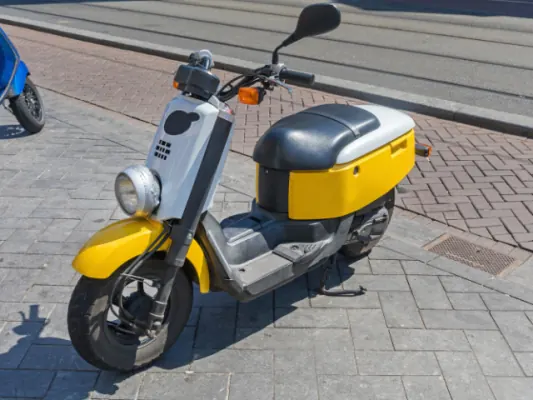
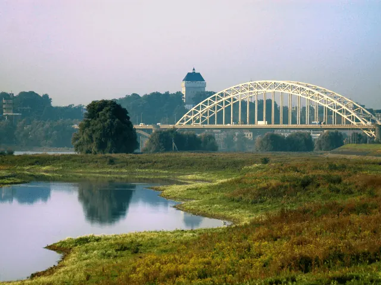

Nijmegen op de scooter: de leukste routes en handige weetjes
Gepubliceerd op 25 maart 2025

Nijmegen is een stad vol historie, cultuur en verrassende plekjes. Ontdek je de stad per scooter? Je ervaart de unieke sfeer van de oudste stad van Nederland. Je voelt de levendigheid in de straten. Je geniet je van de groene parken. En je komt langs gezellige terrasjes. Bovendien geeft een scooter de vrijheid om snel en flexibel te bewegen zonder je druk te maken over parkeerproblemen.
De leukste routes door en rondom Nijmegen
Er zijn talloze routes die je kunt afleggen. Begin bijvoorbeeld in de oude binnenstad, waar de smalle steegjes en karakteristieke gevels je meenemen naar een andere tijd. Rijd daarna richting het Goffertpark. Perfect om even te stoppen voor een frisse neus en een kop koffie bij een van de nabijgelegen cafés. Voor de avontuurlijke rijders is de route langs de Waal een aanrader. Deze rit biedt niet alleen een prachtig uitzicht over de rivier, maar leidt je ook naar de levendige wijk Lent.
Scooters verzekeren: waar moet je op letten?
In Nederland ben je verplicht om minimaal een WA-verzekering te hebben voor je scooter. Je kunt bijvoorbeeld kiezen voor eenscooter verzekeren via Univé. Deze verzekering dekt de schade die je eventueel bij anderen veroorzaakt. Als je scooter ouder is of een bescheiden waarde heeft, is dit vaak voldoende. Echter, als je net een gloednieuwe of duurdere scooter hebt aangeschaft, is het verstandig om te kijken naar aanvullende opties, zoals een WA+ (beperkt casco) of een allriskverzekering. Deze dekken naast schade aan anderen ook schade aan je eigen scooter, diefstal of brand. Vergelijk daarom verschillende verzekeraars en lees de polisvoorwaarden goed door.
Handige weetjes en verborgen pareltjes in Nijmegen
Naast de mooie routes zijn er talloze handige weetjes die je ervaring in Nijmegen aangenamer maken. Wist je dat er speciale parkeerplaatsen zijn in de buurt van populaire hotspots? Denk aan de Waalkade en de Grote Markt. Dit voorkomt dat je eindeloos op zoek moet gaan naar een plekje om je scooter veilig achter te laten. Ook zijn sommige buurten, zoals de wijk Berg en Bos, net even wat minder druk. Ideaal dus voor een ontspannen rit op je eigen scooter.

Veiligheids- en rijtips voor de drukte in Nijmegen
Hoewel een scooter ideaal is om snel door de stad te bewegen, moet je altijd alert blijven op het drukke verkeer. Nijmegen kent een mix van smalle straatjes, drukke fietspaden en brede lanen, waardoor het belangrijk is dat je je snelheid aanpast en voldoende afstand houdt tot andere weggebruikers. Let op de vele voetgangers in het centrum en wees extra voorzichtig bij oversteekplaatsen. Zorg er ook voor dat je zichtbaar bent, zeker tijdens de avonduren, door het dragen van reflecterende kleding of accessoires. Een korte controle van je scooter voor vertrek, zoals het checken van de verlichting en banden, kan je veel kopzorgen besparen.
Praktische tips voor een ontspannen rit door Nijmegen
Als laatste is het slim om je route vooraf even te plannen, zodat je niet voor verrassingen komt te staan. Gebruik navigatie-apps die rekening houden met de drukte in de stad, en wees flexibel: soms leidt een spontane afslag tot een verborgen pareltje dat je anders had gemist. Nijmegen is een stad die uitnodigt om te ontdekken, dus laat je verrassen door nieuwe routes en ontdek zelf de leukste plekjes. Vergeet ook niet om af en toe even te stoppen en te genieten van de omgeving. Een scooterrit door Nijmegen is niet alleen een snelle manier van verplaatsen, maar ook een belevenis op zich waarin elke bocht en elk straatje bijdraagt aan de charme van deze bijzondere stad.